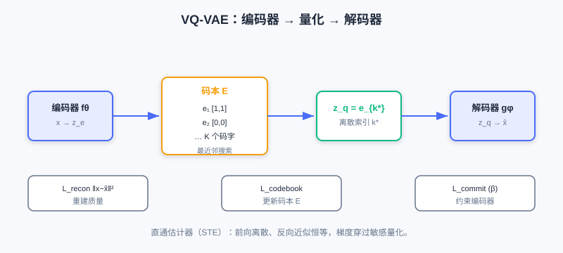
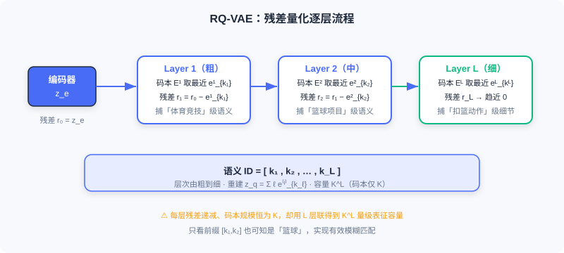

推荐中的 Tokenizer 技术：Codebook 量化与语义 ID
📝 Before You Continue: 请先读完 6.3 反复提及的「物品 Token 化」问题，以及 6.2 的 Decoder-Only 自回归生成——语义 ID 正是喂给它的「词表」。
在 [6.3] 我们指出， 物品 Token 化（Item Tokenization） 是连接传统推荐数据与生成式模型的关键桥梁。本章直面这个核心问题： 如何把推荐系统中的物品，转化为生成式模型能理解、能生成的 Token 序列？
读完本章，你将能够：
- 对比 稀疏 ID / 文本 ID / 语义 ID 三种范式的优劣
- 说明语义 ID 的「可控词表、层次结构、从记忆到推理」三大价值
- 推导 VQ-VAE 的量化与三损失，理解 直通估计器（STE）
- 解释 RQ-VAE 的残差量化如何生成层次化语义 ID
- 了解 RQ-Kmeans / RQ-OPQ 等工业级解耦与混合方案
- 完成 5 道分层练习题，并用交互演示感受量化过程
6.4.0 三种 Tokenizer 范式演进
理解物品表示的三种主流范式，是技术选型，更是建模哲学的转变。
稀疏 ID 范式（Sparse ID-Based）
传统做法：为每个物品分配唯一原子 ID（如 item_10086）。判别式模型中，ID 经 Embedding 层映射到连续向量，再经深度网络学交互。代表：HSTU（把行为组织为 [item, action, timestamp, ...] 结构化序列）、GenRec（生成式架构中直接用稀疏 ID）。
优势 ：无碰撞保证、特征交互自由、工程成熟。
但迁移到生成式时面临 三大根本困境 ：
- 词表爆炸 ：生成式在词表上做下一 token 预测，Softmax 复杂度 。GPT-3 词表约 5 万、LLaMA 约 3.2 万尚可承受；但抖音数十亿视频、淘宝数亿商品的词表达十亿级，Softmax 难以承受。
- 存储与泛化的双重困境 ：十亿 ID 各维护 256 维 Embedding 约需 1TB 参数；更致命的是 原子 ID 正交 ，新物品对模型是陌生符号，须从零积累数据才被「认识」。
- 协同信号隐式依赖 ：ID 相似度只能靠海量行为统计「看过 A 也看 B」才学习，数据稀疏时急剧恶化。
文本 ID 范式（Text-Based）
既然 LLM 擅长自然语言，为何不用文本表示物品？把属性/描述序列化为自然语言，用 LLM 预训练词表（3–5 万）编码生成。代表：M6-Rec（模板填充属性为文本）、LLMTreeRec（树状层次文本）、TallRec/P5（键值对复用 T5）。
优势 ：语义丰富、零样本泛化、可解释强。
两大致命缺陷 ：
- 表示效率低 ：一个商品需数十到上百 token（iPhone 例约 30 token），自注意力 计算量随长度平方增长，信息密度稀疏。
- Grounding 困难 ：生成文本如何精确映射回候选集？存在歧义（「Apple 手机」匹配数百机型）、不完整、候选集外问题。BIGRec 用两阶段+L2 重排弥补，却违背端到端初衷。
语义 ID 范式（Semantic ID-Based）
语义 ID（Semantic ID, SID） 是对前两者的革命性超越：把物品表示为 固定长度的离散 token 序列 ，每个 token 来自可控大小的语义码本（数千到数万）。以 TIGER 为例，一段「NBA 球星扣篮集锦」视频编码为：
SID = [10, 5, 42] # 体育竞技 → 篮球 → 扣篮集锦

三大核心优势 ：
- 可控的固定词表 ：无论物品库多大，基础语义单元有限。词表 、序列长 时，理论可表示 个物品，远超任何实际库。OneRec 用约 8000、OneSearch 用 4000–6000 词表，使端到端自回归训练开销可控。
- 天然层次化结构 ：SID 是层次化序列，前缀粗粒度（「体育」）、后缀细粒度（「篮球扣篮」）。天然支持 前缀匹配——先定大类再细化，与人类认知一致；相似物品共享前缀，提供结构化归纳偏置。
- 从记忆到推理的跨越 ：原子 ID 只能「死记」关联；语义 ID 把相似关系 编码在 token 结构里——所有篮球视频共享
[10,5,...]前缀。一旦模型学会用户喜欢「篮球」这一语义，便能泛化到所有含该 token 的新物品，即使从未出现于训练数据。
💡 Key Insight: 语义 ID 巧妙平衡了表征能力、计算效率、精确 grounding 三者的矛盾，是当前工业级生成式推荐的主流选择——既能被 LLM 高效处理，又保留推荐赖以工作的协同信息。
6.4.1 从原子 ID 到语义 ID 的设计哲学
传统原子 ID（ID:10086）在判别式架构运作良好——Embedding 层把 ID 映射连续向量，海量行为让两部成龙动作片 ID 的向量彼此接近。但重构为生成式问题时，它与生成式架构 根本性不兼容 ：生成式需在离散 token 空间概率建模，而原子 ID 的超大规模词表使建模在数学与工程上都不可行。
语义 ID 的核心思想是把物品从「身份标识」转为「语义描述」——不用随机数字标记，而用一串承载语义的 token 序列表征内容属性。类比：你不会说「推荐 ID:89757」，而会说「推荐一部科幻悬疑片，讲 AI 觉醒，视效震撼」——这段描述通过 层次化概念组合 （科幻→悬疑→AI→视效）唯一确定影片，并天然编码相似性（所有科幻片共享「科幻」前缀）。
工程实现中，语义 ID 综合两类信号：
- 内容信号 ：多模态特征（画面/标题/图片）经预训练编码器（CLIP、BERT）提取语义向量。
- 协同信号 ：用户-物品交互矩阵蕴含的群体行为模式。
两类信号联合编码为连续语义向量，再经 离散化编码 （向量量化）转为 token 序列，如「NBA 扣篮集锦」→ [体育竞技, 篮球, 扣篮, 集锦] → 数字 [10, 5, 42, 89]。
三个层面的根本性改进
- 可控固定词表 ：来自序列的组合性质——有限基础单元组合表达海量物品。
- 层次化结构 ：纵向（粗→细粒度递进）+ 横向（同层相似物品聚近）。模型学到用户喜欢 token 5（篮球）后，自然迁移到所有
[10,5,...]物品，实现 基于前缀的泛化。 - 从记忆到推理 ：一阶推理（同前缀物品 B 似 A）、二阶推理（跨类「篮球→足球」迁移）、组合推理（「教学+篮球」→ 篮球教学视频）。冷启动/长尾下仍强，是语义 ID 成主流的根本原因。
6.4.2 VQ-VAE：离散化的奠基
VQ-VAE（Vector Quantised-VAE） 是语义 ID 离散化的奠基技术，解决「将连续高维语义转为离散符号序列、同时保持表征力」的关键问题。它引入 可学习码本（Codebook） ，建立连续语义空间到离散符号空间的有效映射——既大幅降维（十亿原子 ID → 万级码本），又赋予 ID 间语义关联。
三阶段架构

① 编码器映射 ：编码器 把输入 映射为连续潜在向量 （ 实现降维）。
② 向量量化 ：维护可学习码本 （ 数千到数万），量化即最近邻搜索：
将连续 离散化为码本索引 。数值推演 ：若 ，码本 、，则距 为 、距 为 ，选 即 ——把连续空间「坍缩」到最近离散点。
③ 解码器重建 ：。整体：。
损失函数（三部分协同）
- 重建损失 ：度量重建质量（图像用 ，文本用余弦）。
- 码本损失 ：用 （停止梯度）推动码本向量 靠近编码器输出，梯度只更新码本 、不影响编码器。
- 承诺损失 （ 建议 0.25）：约束编码器输出不远离量化码字，防训练不稳定。
梯度传播：直通估计器（STE）
量化 几乎处处不可导，标准反向传播失效。VQ-VAE 用 STE ：前向严格执行离散化，反向把量化视为恒等映射 ，把解码器梯度直接传回编码器。梯度流：编码器收重建（经 STE）+承诺梯度；解码器仅收重建梯度；码本仅收码本损失梯度。
Analysis: 注意 VQ-VAE 名含「VAE」却与变分自编码器本质不同——它直接优化重建损失、用离散码本做表示学习，更接近普通自编码器，不引入 KL 约束 ELBO。
6.4.3 RQ-VAE：层次化残差量化
VQ-VAE 把每个物品映射为 单一 离散 token，面临「表征精度—码本规模」权衡：增大 提精度但训练不稳、减小 则单 token 难捕复杂多维语义。
RQ-VAE（Residual Quantised-VAE） 用 残差量化 根本打破限制：把单次量化扩展为 层级联，每层捕获上一层遗漏的残差，生成长度为 的 token 序列。码本规模仍控为 ，理论表征容量升至 。

残差量化迭代机制
给定编码器输出 ，第 层（）：
其中 ，最终量化表示 ，语义 ID 即令牌序列 。
数值推演（残差逼近） ：目标 （1 维），两层码本。Layer1 码本 ，最近 ，残差 ；Layer2 码本 ，最近 ，残差 。重建 ，误差从 0.5 降到 0.1。
层次化语义涌现 ：逐层逼近天然形成层次——前期层捕粗粒度（「体育」），后续层捕细粒度（「篮球教学」）。以「NBA 球星扣篮集锦」为例：
- Layer 1（粗） ：最接近 的是「体育竞技」，ID=
[10]，残差含「什么体育？」 - Layer 2（中） ：残差中最接近「篮球项目」，ID=
[10,5]，残差聚焦「比赛还是教学？扣篮还是投篮？」 - Layer 3（细） ：用「扣篮动作」 捕获细节，最终
SID=[10,5,42]。
这种「不断对焦」机制使模型只看前缀 [10,5] 也知是篮球视频，实现有效模糊匹配。
损失与梯度
RQ-VAE 损失在 VQ-VAE 上扩展为多层累积：
每层独立优化其码本 ，承诺损失级联防残差偏移。梯度仍依赖 STE，每层量化处独立应用。
下面用交互演示直观感受 RQ-VAE 如何逐层量化一个物品向量、生成层次化语义 ID：
点击「下一步」观察：编码器输出 → 第 1 层量化捕获粗粒度语义 → 残差传递给下一层 → 逐层细化直到生成完整 SID 序列。注意每层的残差如何越来越小。
6.4.4 工业级方案：解耦与混合
RQ-VAE 端到端训练在工业大规模部署有维护难题：每次模型更新都需为所有物品重算 SID。因此基于 解耦 的两阶段方案应运而生。
RQ-Kmeans：聚类解耦
RQ-Kmeans 提出：码本本质是对表示空间的聚类划分，为何不直接用 K-means 构建？它将离散化解耦为两步：① 任意表示模型（BERT/CLIP）得物品连续向量；② 在向量上直接 K-means 聚类建码本。表示模型与码本可独立迭代，新物品量化只需向量检索无需重训。
残差量化框架保留，但把梯度学习换成 K-means：第 层在残差集 上聚类得码本 ，为每个物品分配最近中心索引 ，残差 传下层。最终 ，量化表示 。
与 RQ-VAE 的核心区别是 表示学习与码本构建解耦——新物品可经 Faiss 向量检索快速分配 SID，K-means 的均匀聚类还天然缓解「码本坍塌」。
RQ-OPQ：混合编码
RQ-VAE/RQ-Kmeans 有个关键问题： 最后一层残差被直接丢弃 ，而它含独特属性（特定品牌型号、价格区间）——电商搜索中恰是区分相似物品的关键。
RQ-OPQ 提出混合方案： RQ 处理层次化语义，OPQ（Optimized Product Quantization）处理横向独特特征。OPQ 先学旋转矩阵 把残差投影到更易量化子空间，再分 个子向量独立标量量化，各子空间索引拼接为 OPQ 令牌（隐式码本 ）。以 OneSearch 配置 得 表征空间。
完整编码 ：RQ-Kmeans 得层次令牌 与最终残差 ；OPQ 把 编码为补充令牌 。最终
OneSearch 实际用 (4096,1024,512 | 256,256)：3 层 RQ-Kmeans + 2 层 OPQ，每物品 5 令牌。以 iPhone 15（粉色，256G） 为例：RQ 部分 [102,8,1]（电子产品→手机通讯→Apple）确立层级身份；OPQ 把残差中的「粉色」「256G」编码为 [56,99]。最终 [102,8,1,56,99] 既含手机层级事实，又保留特定 SKU 独特属性，完美解决长尾商品区分与召回。

核心挑战与应对
| 挑战 | 根因 | 应对策略 |
|---|---|---|
| SID 冲突 | 量化聚类「码本利用不均」，多物品映射同 SID | 训练时优化（均匀分配、限容）+ 推理时补救（混合编码消歧） |
| 目标不一致 | 表示提取/SID 量化/生成训练三阶段独立优化、缺端到端对齐 | 联合优化（梯度端到端）+ 自监督对齐（循环一致性、迭代适应） |
| 多模态融合 | 内容/协同/场景模态分布不一致，简单拼接无效 | 表示层融合（门控/对比学习）+ 量化层融合（模态特定码本、MoE） |
⚠️ Common Mistakes in 6.4
| # | Mistake | Example | Why It's Wrong | Fix |
|---|---|---|---|---|
| 1 | 直接把物品 ID 当生成式词表 | 「十亿商品直接做 Softmax」 | 词表爆炸，Softmax 不可承受 | 用语义 ID 压缩到 可控词表 |
| 2 | 以为文本 ID 万能 | 「用自然语言描述物品即可」 | 表示效率低+Grounding 困难 | 语义 ID 兼顾效率与精确映射 |
| 3 | 混淆 VQ-VAE 与 VAE | 「VQ-VAE 用 KL 约束 ELBO」 | VQ-VAE 无变分推断，是直接重建 | 记住它是带码本的自编码器 |
| 4 | 忽视直通估计器 | 「量化可直接反向传播」 | 几乎处处不可导 | 用 STE 把量化当恒等传梯度 |
| 5 | 丢弃 RQ 最后一层残差 | 「残差没用可扔」 | 残差含独特属性，长尾区分关键 | RQ-OPQ 用 OPQ 编码残差 |
本章小结
📌 Key Takeaways
| Concept | Key Points | Why It Matters |
|---|---|---|
| 三范式 | 稀疏ID/文本ID/语义ID | 语义ID平衡效率·泛化·grounding |
| 语义ID价值 | 可控词表/层次结构/从记忆到推理 | 工业主流选择 |
| VQ-VAE | 编码器-量化器-解码器+三损失+STE | 离散化奠基 |
| RQ-VAE | 残差量化→层次化SID，容量 | 突破单token表征瓶颈 |
| RQ-Kmeans | K-means替代梯度学码本，解耦 | 新物品免重训 |
| RQ-OPQ | RQ层次+OPQ独特属性混合 | 长尾商品精确区分 |
❓ FAQ
Q1: 为什么语义 ID 能缓解冷启动？
A: 相似物品共享语义前缀（如
[10,5,...]），模型学到「篮球」偏好即可泛化到所有含该 token 的新物品，无需靠行为数据死记。
Q2: RQ-VAE 相比 VQ-VAE 多了什么？
A: 残差量化把单 token 升级为 层令牌序列，码本规模不变但容量升至 ，并自然涌现层次化语义。
Q3: 工业界为何偏好 RQ-Kmeans 而非端到端 RQ-VAE？
A: 端到端每次更新要重算全库 SID；RQ-Kmeans 解耦表示与码本，新物品经向量检索即分配 SID，且 K-means 均匀聚类缓解码本坍塌。
🔗 前后关联
- 6.2 （架构基础）的 Decoder-Only 自回归，正是消费语义 ID 序列的「生成器」。
- 6.3 （LLM 基础）把「物品 Token 化」列为迁移核心挑战，本章给出解法。
- 8.x （端到端生成）将 SID 作为 TIGER/OneRec 等模型的输入输出接口。
- 10.x （扩散推荐）的潜在空间扩散与本节码本量化在空间压缩思想上相通。
Practice Problems
Work through all problems in order — they get progressively harder. Each has a complete solution you can reveal after trying it yourself.
Problem 6.4.1 — 词表容量计算 🟢 Easy
设语义 ID 码本大小 ，序列长度 。理论最多可表示多少个不同物品？对比稀疏 ID 范式下需为同等数量物品维护的 Embedding 规模（每物品 256 维、float32）。
💡 Solution (click to reveal)
Approach: 组合性质。
个物品。
稀疏 ID 需 字节 字节 艾字节（EB）——完全不可行；而语义 ID 只需 个码本向量（每个码字 256 维 float32 约 1KB，全部码本合计约 32MB）。
Key points:
- 语义 ID 用「短序列组合」表达海量物品，词表可控。
- 这正是解决词表爆炸的关键。
Problem 6.4.2 — VQ-VAE 量化 🟢 Easy
编码器输出 ，码本 。求量化索引与 ，并说明 STE 在反向时如何近似。
💡 Solution (click to reveal)
Approach: 最近邻。
距 : ；距 : 。选 ，，。
反向时 STE 把量化视为恒等：，梯度直接穿过离散跳跃传回编码器。
Key points:
- 前向严格离散，反向近似恒等。
- STE 是训练 VQ 类模型的标配。
Problem 6.4.3 — RQ-VAE 残差 🟡 Medium
目标 ，Layer1 码本 选 ，Layer2 码本 选 。写出每层残差 与最终重建 ，并说明层次语义如何涌现。
💡 Solution (click to reveal)
答：
- Layer1: （代表「整数量级」），。
- Layer2: （代表「小数部分」），。
- 重建 ，误差 （从 降到 ）。
层次语义：第 1 层捕获粗粒度（整体量级/大类），第 2 层捕获细粒度（残差细节），逐层细化即「不断对焦」，序列 [5, 0.4] 本身携带由粗到细的结构。
Key points:
- 残差 = 上一层未捕到的信息，传下层。
- 多层叠加容量 ，且天然层次化。
Problem 6.4.4 — RQ-OPQ 必要性 🔴 Hard
说明为何 RQ 最后一层残差不应丢弃，并写出 RQ-OPQ 最终 ID 的结构。以 iPhone 15（粉色，256G）为例解释 RQ 与 OPQ 的分工。
💡 Solution (click to reveal)
答： RQ 残差含物品独特属性（品牌型号、价格、颜色）——电商搜索中恰是区分相似物品的关键，丢弃会令长尾商品无法精确区分。
RQ-OPQ 最终 ID：
iPhone15（粉,256G）：RQ 部分 [102,8,1]=电子产品→手机通讯→Apple，确立层级身份（与华为/小米同归「手机」类）；OPQ 把残差中「粉色」「256G」编码为 [56,99]，专用于精确匹配用户具体属性约束。最终 [102,8,1,56,99] 既含层级事实又保留 SKU 独特性。
Key points:
- RQ 管共性语义，OPQ 管个性特征。
- 混合编码兼顾召回（层次）与精确（独特）。
🏆 Challenge: 设计 SID 方案
某电商有 5 亿商品、每日新增 50 万。请写约 150 字说明：应选 RQ-VAE 端到端还是 RQ-Kmeans 解耦？给出词表与层数配置思路，并指出如何应对「SID 冲突」与「新物品上线无需重训全库」。
💡 Hint
选 RQ-Kmeans 解耦 ：每日新增 50 万若用端到端 RQ-VAE 需重算全 5 亿 SID，成本爆炸；解耦后新物品经向量检索（Faiss）即分配 SID、无需重训。配置如 3 层 RQ + 2 层 OPQ（参考 OneSearch），码本约 4096–8000。SID 冲突用均匀分配/限容算法缓解、长尾靠 OPQ 独特属性消歧；新物品上线只向量检索不入训练。